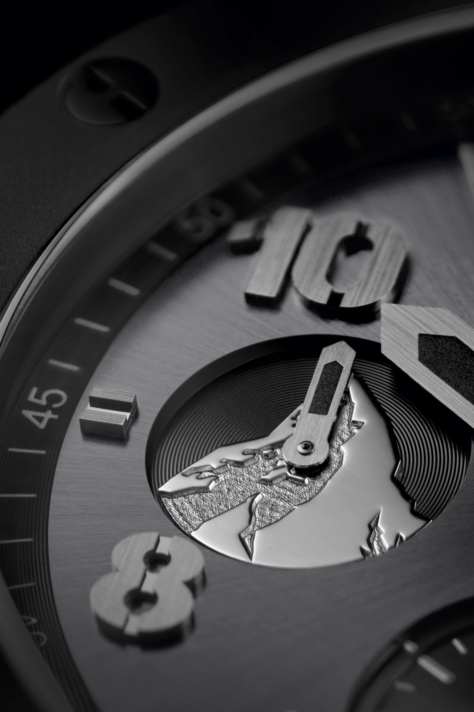

BIG BANG ALL BLACK ZERMATT
Hublot istražuje skriveno lice Matterhorna
Hublot kreće u ponovno osvajanje Matterhorna – svjetski poznatog amblema Švicarske. Proizvođač je predstavio novi Big Bang "All Black" model.
Švicarski prvaci u spustu i slalomu Corinne Suter i Tanguy Nef predstavljaju njegova dva ponosna lica.
Matterhorn je kultni amblem Švicarske i briljantno bilježi kontrastna lica njenog identiteta. Fasetirani piramidalni oblik planine čini je odmah prepoznatljivom među tisućama drugih alpskih vrhova.
To je jedan od najtežih uspona na svijetu, ali je postao sinonim za alpske obiteljske aktivnosti u slobodno vrijeme. Besprijekorne bijele padine pozlaćuju ogromnu masu stijena, rođene u prvim grčevima Velikog praska i prkosne zubu vremena.
Kako bismo to proslavili, stvorili smo ograničeno izdanje prepuno keramike, uistinu izvanrednog mineralnog materijala.
Muška verzija od 44 mm dostupna je u 100 pojedinačno numeriranih komada. U kućištu od crne keramike od mikrobrušene keramike nalazi se ručno namotan kronograf HUB4100, koji je vidljiv kroz stražnju stranu kućišta od safira.